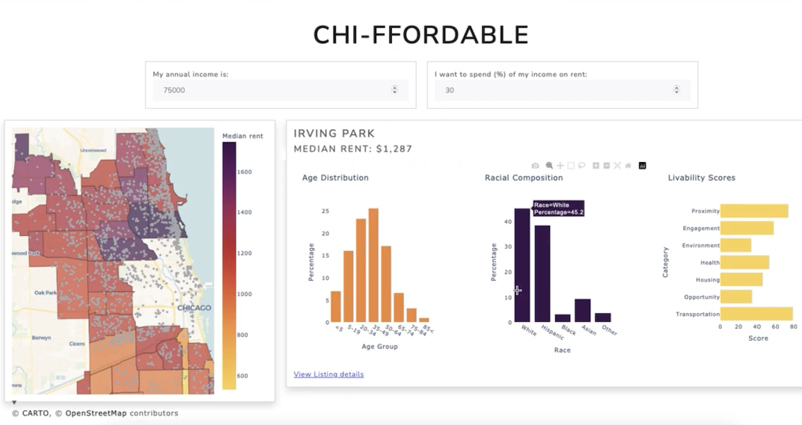
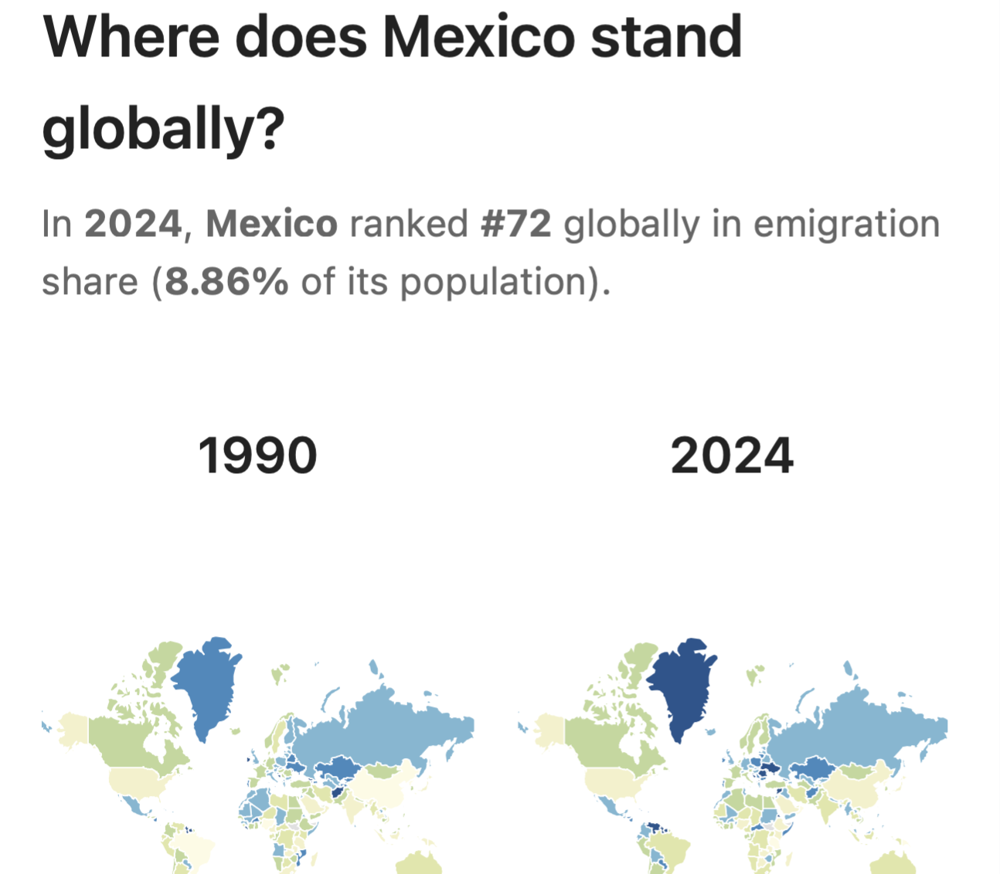

Hi, I am
Daniela Ayala
Technology × Data × Decision Strategy
Merging analytics, systems, and public-purpose innovation
I help organizations navigate complex decisions by combining technology, data science, economic reasoning, and institutional analysis. My work spans public agencies, digital platforms, fintech, international organizations, and civic-tech projects—always focused on improving how decisions are made and how systems perform.
Let’s ConnectSelected Projects
A mix of analytical systems, decision-support tools, machine learning, migration analytics, policy research, dashboards, and civic-tech storytelling.


About Me
I work at the intersection of technology, analytics, product design, and public-purpose innovation. My goal is to build systems and insights that help organizations make better decisions and deliver better outcomes—whether in finance, government, civic tech, or digital platforms.
Education
- MSc in Computational Analysis & Public Policy — University of Chicago
- Bachelor of Economics — Centro de Investigacón y Docencias Económicas (CIDE)
Experience
- OECD Economics Department — NLP, embeddings, data infrastructure, fiscal OCR, decision-support tools.
- Mercado Pago — Payments, acquisition strategy, analytics, financial inclusion.
- Banco de México — Fintech regulation, sandbox evaluation, digital governance.
Let’s work together
danayala@uchicago.edu